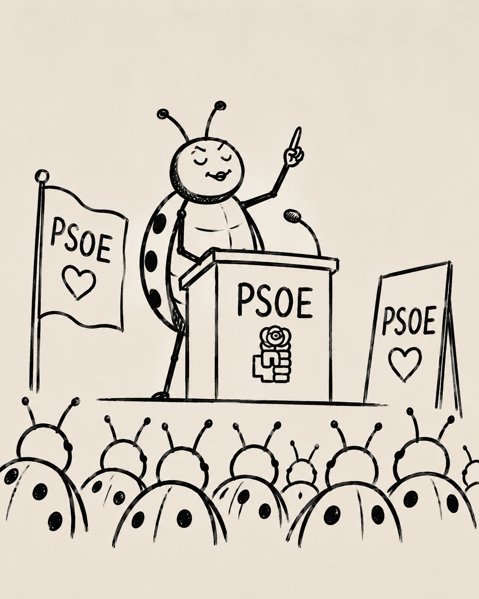

¡Mira, un Zapatero!
El otro día veía la UDA con unos amigos. Al terminar, se nos acercó un señor con bastante pinta de «reventao». Nos contó batallitas de cuando organizaba obscenas despedidas de soltero para famosos en el mítico puticlub de la ciudad.
Nada en su lenguaje corporal, su aspecto o su voz sabinera hacía sospechar que estuviese exagerando. Nos encontrábamos ante el clásico putero de manual, exaltado por la euforia de la victoria balompédica.
Al día siguiente lo vi paseando en silla de ruedas a un señor de su edad. Pensé que quizá era su antiguo compañero de farra. Que ahora, ante el ocaso de la vida, se dedica a llevar a su amigo —cuya salud quedó algo más resentida— a recordar aquellas historias de drogas, mujeres y excesos. Me pareció funestamente tierno. Las apariencias a veces aciertan y engañan a la vez.
Y esto de las apariencias engañosas me lleva inevitablemente al bueno de Zapatero. Poco se puede decir. Emosido engañados. Bajo la arena de playa, al parecer, había adoquines.
Mi gran duda es: sabiendo cómo funciona el mundo, ¿cómo se atrevió a hacer una campaña que, pese a ser correcta en sus directrices morales, chocaba frontalmente con los maquiavélicos intereses de la CIA y el Mosad?
Siempre he luchado por convencerme de que las generalizaciones del tipo «todos son iguales» eran concepciones no solo erróneas, sino pérfidas. Pero me estoy quedando sin argumentos. ¿Siempre fue así o la vida le convirtió en eso? ¿Y yo, que siempre me entristecía al pensar en lo que la vida había hecho con Felipe González?
Tal vez estamos todos destinados a convertirnos en imbéciles. Mirad a Florentino contándole al de los fantasmas que ha fichado a un lateral derecho «mu güeno».
De hecho, acabo de terminar el documental de Rafa Nadal. Está hecho a base de flashbacks y flashforwards que cuentan su historia. Y mola, porque hace que verlo tenga un valor añadido.
Nadal me parece un gilipollas. Y tengo la sensación de que no lo era cuando comenzó. De modo que, al ver el documental, puedes jugar a intentar buscar el momento exacto en el que se convirtió en un gilipollas.
Intento ir al parque con los niños y desconectar de todo esto. Pero, curiosamente, estas son las semanas del año en las que, si vas a un parque, no paras de escuchar a niños diciendo:
—¡Mira, un Zapatero!
